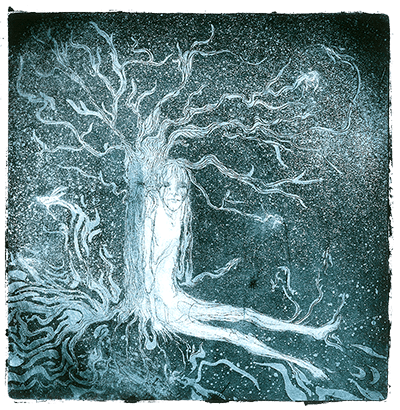

-vektorové obrazky sa skladajú z kriviek čiže obrazok môže byť ako koľvek veľky nikdy nestrati na kvalite a nikdy nebude rozmazaný.
- toto je fajn prístup pre jednoduchšie obrazky, ktoré sa dajú nakresliť krivkami nie je to fajn pre konplikované obrazky s milionom farieb a prechodov
Nový atribut srcset pre tag img
- kde ja môžem zadať viacej ciest k viacerím obrazkom a tiež definovať koľko násobok px má mať zariadenie.

(img srcset="img/tree_800px.png 2ximg/tree_600px.png 1.5x"
src="img/tree_400px.png" alt="">/*tento src img/tree-400px sa použije za normalnej okolnosti*/
pri dvojnasobnej px dansity sa použije srcset tree_800px.png ktorému sme nastavili že sa ma vybrať pri dvojnasobnej px density 2x keď dame za 2x čiarku a pridame tree_600px.png 1.5x tak ten 600px obrazok sa aplikuje pri 150% px dansity
toto je taký jednoduchy zapis z ktoreho si prehliadač dokaže určit ktory element použije
toto je v pohde ale čo ak k tomu pridame responsive design
čo ak k tomu pridame rezponzivní dizajn
ten istý obrazok v rôzných veľkostiach
obrazok nebudeme vyberať iba podla px density ale navyše aj podla rozmerov rzlišenia našeho zriadenia.
užitočný článok prečitaj si !
native responsive images
img sizes="(max-width: 30em) 100vw, /* sizes= atribut nam dovouje ešte viacej spresniť situáciu prehliadača čiže ak viewport je široky 30 em tak obrazok bude široky na 100% čiže bude pokrývať celú strnku čast stranky*/
(max-width: 50em) 50vw,/*ak je rozlišenie o niečo vyššie napr 50em čo je cca 640px tak zrejme chceme tie obrazky zobraziť 50%tnej velkosti čiže ked budu dva obrazky dajú sa vedľa seba */
calc(33vw - 100px)"
srcset="swing-200.jpg 200w, /*srcset je výber obrázkov ktore prehliadač môže použiť*/
swing-400.jpg 400w, /*jednotka w symbolizuje širku na to aby prehliadač nemusel sťahovať všetky štyri obrazky tak mu pomocou jednotky w napišeme koľko ma daní obrzok širku a teraz prehliadaš na zaklade veľkosti viewportu px density viberie ktory obrazok sa použije */
swing-800.jpg 800w,
swing-1600.jpg 1600w"
src="swing-400.jpg" alt="Kettlebell Swing">
dôležita vec z tohoto je že tento srcset atribut v img element sa používa ak mam ten istý identický obrazok iba v rôzných veľkostiach rozlišeniach hovori sa tomu resolution switching !!!
do html pribudol novy tag Picture
jeho úloha je podobná umožňuje pridať do stránky rôzne obrazky podľa rozlišenia a px density, ale picture služi na to ak potrebujeme na zaklade rozných veľkosti obrazoviek viewportu pridávať iné obrazky a nie tie isté len inej veľkosti ale ine obrazky tento systém kde použivame na ine rozlišenia ine obrazky sa nazýva art direction
zápis pre tag picture
source media="(min-width:45em)" srcset="img/tree_800px.png">< /source> /*od 45em 720px a vyššie sa použije obrazok stromu*/ lebo v našom source sme nastavili mediaqueries
source media="(min-width:30em)" srcset="img/hipster.png">< /source>/*tento obrazok sa použije pri 480px 30em a vyššie viewportu až po 720px viewportu pretože dalej sme od 45em zmenili obrazok*/
img src="img/cc.svg" alt=""> /*tento obrazok sa použije po 480px wiewportu*/
picture>
1) img srcset a 2 )picture source srcset sa použivaju na rozdielne učely
1)srcset v img elemente sa použiva keď máme rovnaký obrazok v inych veľkostiach
2) picture source srcset sa použiva keď chcem robiť art direction keď máš rozdielné obrázky
ak to chceme použivať dnes musíme použiť polifily picturefill
picturefill
je to tradičn js súbor ktorý musíme vložiť do stránky